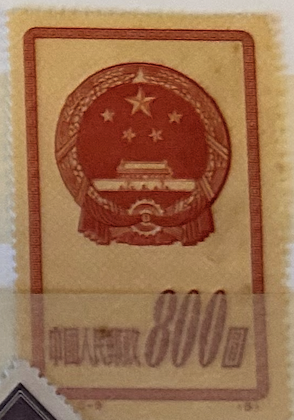
| SOURCE | TITLE| IMAGE MATCH | click to source page |
| HipStamp | China - Scott 121 - National Emblem-1951 -MNH -Single 800$ Stamp | Asia - China, General Issue Stamp / HipStamp | 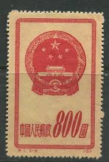 |
| eBay | 56793 China Stamp 1959 4c UNH Beautiful Stamp Coll SP* | eBay | 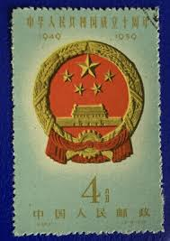 |
| Xabusiness.com | C68 Scott 441-444 10th Anniv. of Founding of PRC(2nd Set) - China Stamps | 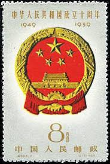 |
| eBay | 1 Stamp Chinese Stamps for sale | eBay |  |
| Carousell Malaysia | PEOPLE REPUBLIC OF CHINA 1959 🇨🇳 10TH ANNIVERSARY NATIONAL EMBLEM USED STAMP OF 10f, Hobbies & Toys, Collectibles & Memorabilia, Stamps & Prints on Carousell | 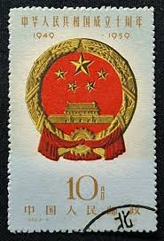 |
| Find Your Stamps Value | Commemorate 10th anniversary of the Proclamation of the People's Republic of China: National Emblem - 中华人民共和国成立十周年: 国徽4f Pale green, Red & gold stamp price, value | 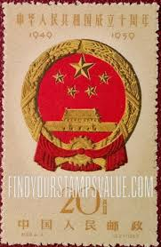 |
| China, Peoples Republic, 1951, National Emblem, 200$ | 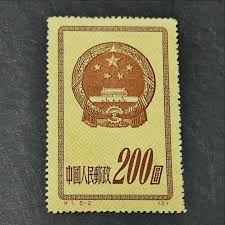 | |
| HipStamp | China-2004-Sc#3392-3 China Flag & National Symbols Large. Mnh- S/S-Vf-Rare | Asia - China, General Issue Stamp / HipStamp | 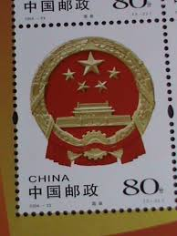 |
| eBay | 1951 China Stamps Lot HE57 | eBay | 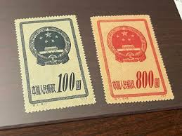 |
| 每日頭條 | 百年邮票发展，湖南省博物馆藏邮票欣赏- 每日头条 | 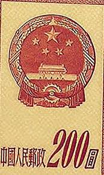 |
| HipStamp | China Stamp: 1959 Sc#443 10th Anniversary of China Cto-Mnh Stamp. Very Rare. | Asia - China, General Issue Stamp / HipStamp | 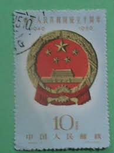 |
| Carousell | China Stamps C68 CTO NH, Hobbies & Toys, Memorabilia & Collectibles, Stamps & Prints on Carousell |  |
| Shutterstock | China Circa 1951 Stamp Printed China Stock Photo 102342220 | Shutterstock | 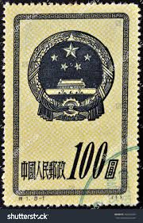 |
| eBay | 12424)) VR China Mi 122-126 II, ohne Gummi wie verausgabt | eBay | 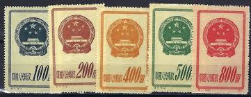 |
| eBay Australia | Used Individual Chinese Stamps for sale | Shop with Afterpay | eBay Australia | 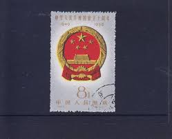 |
| eBay | P.R. CHINA 442 - National Emblem (pb24649) | eBay | 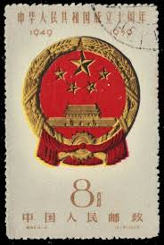 |
| Shutterstock | China Prc 1959 October 1 20 Stock Photo 2197940307 | Shutterstock |  |
| Xabusiness.com | 1979 China Stamps |  |
| HipStamp | China Stamps: 1951 Sc#120 National Emblem Mint Stamps- 69 Years OLD Stamp | Asia - China, General Issue Stamp / HipStamp | 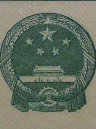 |
| Shutterstock | 6+ Hundred 1959 Anniversary Royalty-Free Images, Stock Photos & Pictures | Shutterstock | 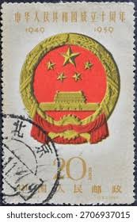 |
| eBay | CHINA PRC 1959 NATIONAL EMBLEM (Scott 442-444 SHORT 441) VF USED CTO MNH | eBay | 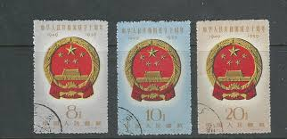 |
| WordPress.com | educational standards | Theodore Dalrymple writes: |  |
| HipStamp | China Stamp:1979-1500-J45- 30th Anniversary of China-National Emblem ,Mnh Stamp | Asia - China, Stamp / HipStamp | 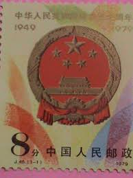 |
| Shutterstock | China Prc 1959 October 1 20, arkistovalokuva 2197940307 | Shutterstock | 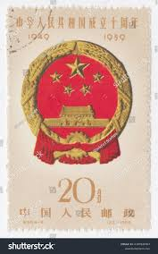 |
| Alamy | CHINA - CIRCA 2004: A stamp printed in China shows 2004-23 National Flag and Emblem of the people's Republic of China , circa 2004 Stock Photo - Alamy | 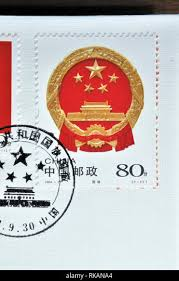 |
| eBay | CHINA - 2 USED STAMPS - NATIONAL EMBLEM - COAT OF ARMS - 1959. | eBay |  |
| Shutterstock | China Circa 1959 Cancelled Postage Stamp Stock Photo 2706936895 | Shutterstock |  |
| Bob Shop | China - Chinese stamp during the Cultural revolution (1977) J19-Zhu De was listed for 400.00 on 11 Oct at 18:51 by MingQing Antiques in Johannesburg (ID:625956398) | 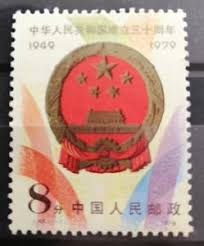 |
| Shutterstock | Vietnam Circa 1976 Stamp Printed North Stock Photo 163961483 | Shutterstock | 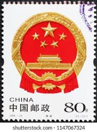 |
| Violity | марки Китая (105342519) - buy on Violity | 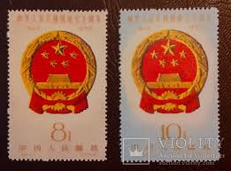 |
| Shutterstock | Welcome To China Stamp: Over 13 Royalty-Free Licensable Stock Photos | Shutterstock | 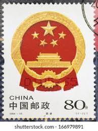 |
| eBay | China Stamp 1959 C68 10th Anniversary Founding People's Republic Secondset MNH | eBay | 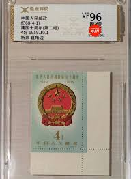 |
| eBay UK | 1959 China Stamps C68 SC#442-443 National Emblem CTO (?) HARIASTAMP | eBay UK | 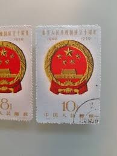 |
| eBay | China Flag & National Emblem Postal Stamps for sale | eBay | 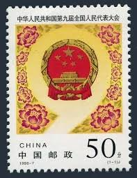 |
| AgAuNEWS | WORK OF CHINESE ARTIST XU BEIHONG CELEBRATED ON FOUR NEW COINS - AgAuNEWS |  |
| Wikipedia | File:National Emblem of the People's Republic of China (2).svg - Wikipedia | 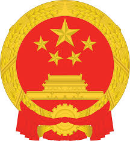 |
| theweekendcompany.com | Stamp Gallery | 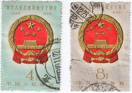 |
| eBay | PRC China 1999 Commemorative & Special Stamps Hard Bound Slip Case Collection | eBay |  |
| Etsy | Chinese National Emblem Sticker - Decal - American Made - UV Protected China Flag Chn Cn Coa - Etsy | 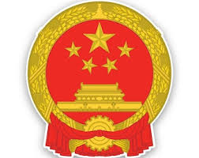 |
| eBay | CHINA PRC 1951 Sc#117-21 S1 National Emblem Reprint Set CTO Used NH VF | eBay | 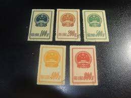 |
| Dreamstime.com | Macro image of china yuan stock photo. Image of emblem - 2693184 |  |
| DocShipper | Shipping from China to South Korea in 2026 | Guide | 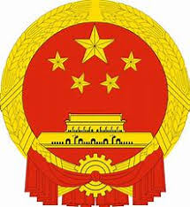 |
| CleanPNG | Chinese Government PNG Images - CleanPNG | 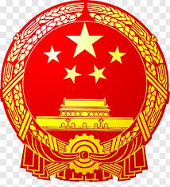 |
| HiClipart | Watercolor Party, Paint, Wet Ink, China, Ministry Of State Security, National Emblem Of The Peoples Republic Of China, Kuomintang, State Council Of The Peoples Republic Of China transparent background PNG clipart | | 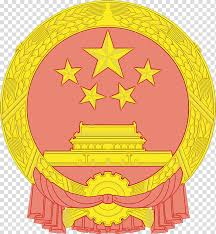 |
| eBay | China 2021-2 Imprint Implementation of Civil Code of the PRC Stamp 中华人民共和国民法典 | eBay | 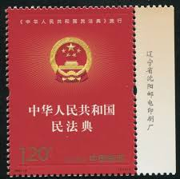 |
| tiktokcoalition.org | Home - The TikTok Coalition | 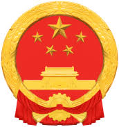 |
| eBay | PRC China, 1998-(7), sc# 2854, Mint, NH, OG, National Congress | eBay | 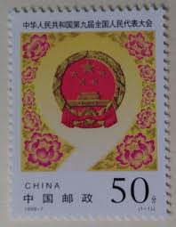 |
| Generali Group | Countries 1 | 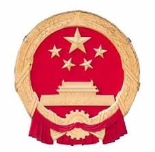 |
| Sparks Auctions | Lot 951, China 1953 $800 yellow, orange and red Military Stamp, VF unused, sold for C$409 – Sparks Auctions | 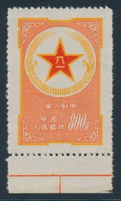 |
| HiClipart | National Emblem of the People's Republic of China Coat of arms Crest, China transparent background PNG clipart | HiClipart | 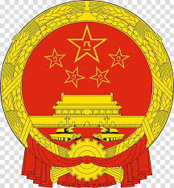 |
| eBay | CHINA PRC 1959 Sc#441-44 C68 National Emblem Postal Used Set VF | eBay | 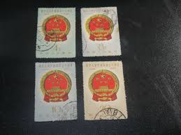 |
| iStock | Peoples Republic Of China National Emblem Isolated On White Stock Photo - Download Image Now - iStock | 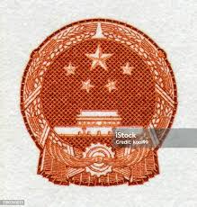 |
| Find Your Stamps Value | Rarest and most expensive Chinese stamps list | 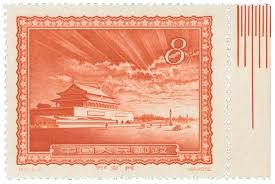 |
| eBay | CHINA - Stamps 1959 . used 18 stamps . A selection of old Chinese stamps . | eBay | 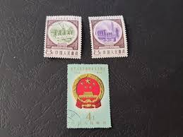 |
| eBay | China 2 Yuan 1960 Banknote P-875. SN:0638522. High grade | eBay | 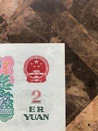 |
| iStock | Coat Of Arms Of China Stock Illustration - Download Image Now - China - East Asia, Insignia, 2015 - iStock | 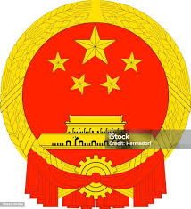 |
| Spink & Son | 2428 - People's Republic of China, Order of Liberation Medal, 1955, | 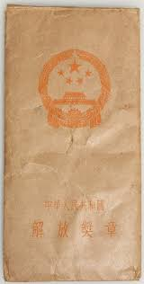 |
| Alamy | Ten yuan note hi-res stock photography and images - Page 2 - Alamy | 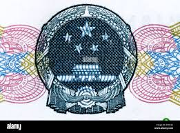 |
| 10+ "Johnson-quan" profiles | LinkedIn |
.svg){kind=link}